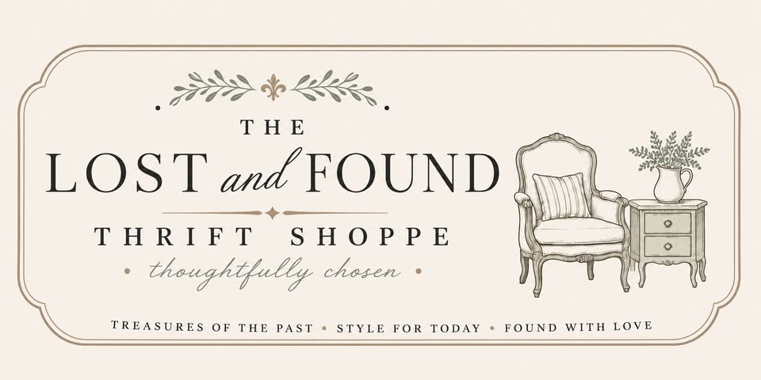
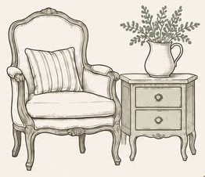

No. 001
Hours
Monday – Saturday
10:00 AM – 4:00 PM
Tentative hours while we settle into our new daily rhythm.

Now open in Fayetteville, North Carolina
We are beyond excited to officially open our doors in Fayetteville, North Carolina.
Look for the distinctive blue awning at 236 Dunn Road.
Our Origin & Hearth
Through countless hours of hard work, dedication, and a whole lot of heart, The Lost and Found Thrift Shoppe was built to be more than just a store. It is a welcoming, thoughtfully curated haven where pre-loved items find new life and cherished homes.
Whether you’re hunting for one-of-a-kind vintage treasures, eclectic home accents, or timeless everyday essentials, we invite you to take your time, browse the shelves, and discover something truly special every single time you step inside.
see you on Dunn Road
Dedicated Impact · Giving Back to St. Jude
At The Lost and Found Thrift Shoppe, every discovery carries meaning. A portion of every sale goes directly to support St. Jude Children’s Research Hospital in their relentless mission to treat and defeat childhood cancer and other life-threatening diseases.
Families never receive a bill from St. Jude for treatment, travel, housing, or food—because all a family should worry about is helping their child live.
Visitor Essentials
Community & Connection
Inventory turns over constantly. Join our community on Instagram and Facebook to catch sneak peeks of weekly restocks, featured vintage drops, and shoppe announcements.